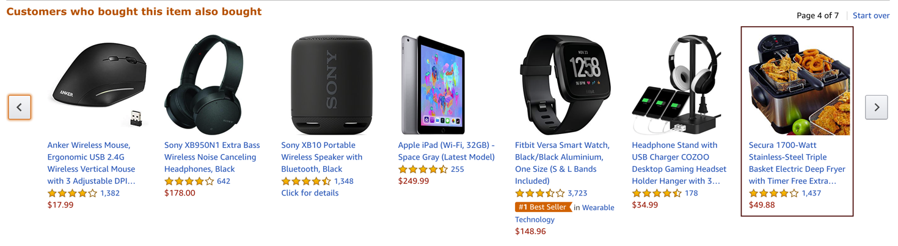

Introduction
This chapter provides some motivating examples illustrating the rise of machine learning (ML).
ML is everywhere!
Machine learning is already used all around us to make our lives more convenient:
Face recognition
Face recognition technology is one of the earliest notable examples of machine learning and computer vision that can nowadays be found in every digital camera and smartphone.
While the algorithms implemented in a camera application are fairly simple and only detect the presence of faces in general to make sure you look your best when the picture is taken, more sophisticated algorithms are also being used by governments and law enforcement in more and more countries to match a detected face to a known person in their biometric databases, for example, to identify criminals. So…smile!?

Object recognition (e.g., for self-driving cars)
Another example from the area of computer vision is object recognition or image segmentation in general. This is, for example, used in self-driving cars to make sure they are aware of street signs and pedestrians.

Analysis of medical images
The last example on image data comes from the application area of medicine: Below you see two images of retinas, i.e., photos taken of the back of someone’s eye, based on which it is possible to diagnose a common complication of diabetes that can result in blindness if left untreated.
The diagnostic algorithm to identify the markers of the disease in these images was developed by researchers at Google and achieves the same level of accuracy as human experts in the field. Google had even assembled a team of top specialists to discuss the hardest cases again to get consistent labels for all images, which gave their model an additional performance boost.
Since the equipment to take these images is fairly cheap, this means that with this ML model, expert diagnostic decisions can now be made available to those that might otherwise not have had the means to consult a top specialist.

Conversational agents (i.e., speech recognition…)
Leaving the field of computer vision, now an example from the area of natural language processing (NLP): Conversational agents, like Siri or Alexa, are waiting for commands in many people’s homes. While many of the answers they give are still scripted by humans (as in the screenshot below), the real challenge is to understand what the person had actually said in the first place. Speech recognition, i.e., automatically transcribing spoken language into text, is a rather difficult problem, for example, since people speak with different accents and there can be additional background noises.

Machine translation
Again from the field of NLP: machine translation, i.e., automatically translating text from one language into another.
If you have used Google Translate (shown as an example in the screenshot below) after it was first released in 2006, you were probably often quite disappointed with the results, as the translated sentences read more like the words were just looked up one after another in a dictionary (= statistical machine translation). However, this changed when Google made the switch to a neural network model to generate the translations 10 years later in 2016: now the translated texts are actually readable and usually require only minor manual corrections, if any.

Recommender systems
Another application area are recommender systems, for example, on e-commerce platforms (like Amazon in the screenshot below) to provide the user with helpful search results and suggestions, and thereby generate revenue for the respective companies. They are also used on social media platforms and by Netflix, YouTube & co to keep you glued to your screen.
Sometimes the provided suggestions might help you find exactly what you were looking for. But especially platforms with uncurated content such as YouTube have also been criticized for fostering, e.g., conspiracy theories through these personalized recommendations. Since this kind of content kept users especially engaged, it was recommended a lot and thereby drove the users further down some rabbit hole instead of also providing perspectives outside one’s own information bubble.
But on the upside, the research on recommender systems has also sparked developments in other areas of science, such as methods that recommend drug molecules that fit to the proteins playing a key role in certain diseases to accelerate the search for a cure.


Better than humans: AlphaGo
In 2016, DeepMind, a startup subsequently acquired by Google, presented AlphaGo, the first computer program to beat a human Go master.
This was a huge milestone for the AI research community, as Go, with a 19 x 19 playing field, is a lot more complex than chess (8 x 8 tiles and more restrictive movement patterns), and even the most optimistic AI researchers had not expected that a computer could win against a Go master before 2020.
The algorithms used in AlphaGo are from the subfield of reinforcement learning, which we will discuss in more detail later.

Protein folding - solving a 50-year-old challenge
DeepMind presented another major success story in 2020: Their AlphaFold model now estimates the 3D structure of a protein from its raw amino acid sequence as accurately as traditional simulation models.
Proteins often play a key role in diseases. If we know a protein’s 3D structure, we can determine which drug molecules can bind to it and thereby identify target structures that should be investigated further to find a cure for the disease.
While exact simulation models to estimate a protein’s 3D structure existed for a long time, these were very slow and it often took several days to compute the folding for a single protein. With the new neural network model, the same computation can now be done in a matter of minutes or even seconds, thereby vastly accelerating drug development.

Neural networks getting creative
Lots of fun applications use neural networks to create new content, i.e., perform creative tasks that were previously thought exclusive to humans.
For example, an AI has written a slightly confusing yet hilarious script for a movie, which was then actually produced.
Neural networks are also used to visualize music by combining and transforming images, like in the video below:
And you’ve probably also seen some examples of “Neural Style Transfer” before, a technique that can, for example, be used to make your social media profile picture look like a van Gogh painting:
Even stock photos are now basically obsolete, since we can use neural networks to generate images given a textual description:

And chatbots can hold conversations and provide information in a variety of styles:

ML history: Why now?
Why is there such a rise in ML applications? Not only in our everyday lives has ML become omnipresent, but also the number of research paper published each year has increased exponentially:

Interestingly, this is not due to an abundance of groundbreaking theoretical accomplishments in the last few years (indicated as purple diamonds in the plot), but rather many of the algorithms used today were actually developed as far back as the late 50s / early 60s. For example, the perceptron is a precursor of neural networks, which are behind all the examples shown in the last section. Indeed, some of the most important neural network architectures, recurrent neural networks (RNN) and convolutional neural networks (CNN), which provide the foundation for state-of-the-art language and image processing respectively, were developed in the early 80s and 90s. But back then we lacked the computational resources to use them on anything more than small toy datasets.
This is why the rise in ML publications correlates more closely with the number of transistors on CPUs (i.e., the regular processors in normal computers) and GPUs (graphics cards, which parallelize the kinds of computations needed to train neural network models efficiently):

Additionally, the release of many open source libraries, such as scikit-learn (for traditional ML models) and theano, tensorflow, and (py)torch (for the implementation of neural networks), has further facilitated the use of ML algorithms in many different fields.
While these libraries democratize the use of ML, unfortunately, this also brings with it the downside that ML is now often applied without a sound understanding of the theoretical underpinnings of these algorithms or their assumptions about the data. This can result in models that don’t show the expected performance and subsequently some (misplaced) disappointment in ML. In the worst case, it can lead to models that discriminate against certain parts of the population, e.g., credit scoring algorithms used by banks that systematically give women loans at higher interest rates than men due to biases encoded in the historical data used to train the models. We’ll discuss these kinds of issues in the chapter on avoiding common pitfalls.
Another factor driving the spread of ML is the availability of (digital) data. Companies like Google, Amazon, and Meta have had a head start here, as their business model was built around data from the start, but other companies are starting to catch up. While traditional ML models do not benefit much from all this available data, large neural network models with many degrees of freedom can now show their full potential by learning from all the texts and images posted every day on the Internet:

But we’re still far from Artificial General Intelligence (AGI)!

An AGI is a hypothetical computer system with human-like cognitive abilities capable of understanding, learning, and performing a wide range of tasks across diverse domains. Specifically, an AGI would not only perform specific tasks but also understand and learn from its environment, make decisions autonomously, and generalize its knowledge to completely new situations.
Instead, what is used in practice today is Artificial Narrow Intelligence (ANI): models explicitly programmed to solve a specific task(s), e.g., translate texts from one language to another. But they can’t generalize (on their own) to handle novel tasks, i.e., a machine translation model will not tomorrow decide that it now also wants to recognize faces in images. Of course, one can combine several individual ANIs into one big program trained to solve multiple different tasks, but this collection of ANIs is still not able to learn (on its own) any new skills beyond these capabilities.
Many AI researchers believe that at least with the currently used approaches to AI (e.g., large language models (LLMs) like ChatGPT from OpenAI), we might never produce a true human-like AGI. Specifically, these AI systems still lack a general understanding of causality and physical laws like object permanence – something that even many pets understand.
If you’re interested to learn more about the faults of current AI systems, the blog articles by Gary Marcus are highly recommended!